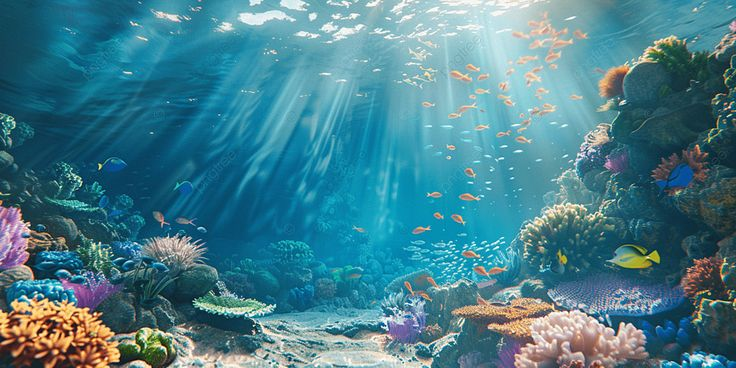

Marine Life: A World Beneath the Waves
Marine life encompasses the plants, animals, and other organisms that live in the ocean, covering over 70% of the Earth’s surface, is home to a mesmerizing and diverse ecosystem known as marine life. From the tiniest plankton to the majestic blue whale, the underwater world is teeming with creatures that play vital roles in maintaining the planet's balance.
The Beauty of Biodiversity
Marine life includes a vast range of species—fishes, corals, mollusks, crustaceans, sea mammals, and more. Coral reefs, often called the “rainforests of the sea,” host thousands of marine organisms and support fisheries, tourism, and coastal protection. Every creature, no matter how small, contributes to the ecological health of the ocean.
Why Marine Life Matters
Healthy marine ecosystems are essential to human survival. Oceans regulate our climate, produce oxygen, absorb carbon dioxide, and provide food and income for millions of people worldwide. Moreover, marine biodiversity contributes to scientific research, especially in medicine and biotechnology.
Threats to Marine Ecosystems
Unfortunately, marine life faces serious threats:
- Pollution (like plastic waste and oil spills)
- Overfishing
- Climate change, which causes ocean acidification and coral bleaching
- Habitat destruction, including the damage of reefs and mangroves
These challenges disrupt food chains, reduce biodiversity, and endanger entire ecosystems.
How We Can Help
Protecting marine life is a shared responsibility. Simple actions like reducing plastic use, supporting sustainable seafood, conserving water, and raising awareness can make a significant impact. Global policies and marine protected areas are also crucial in safeguarding ocean habitats.
A Call to Explore
Whether you're snorkeling in a reef or reading a book about sea creatures, there's always something magical to discover in marine life. Let's cherish and protect our oceans—for the planet, for wildlife, and for future generations.